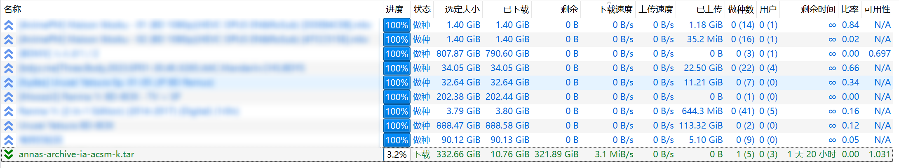

6 日
现在看起来更像是月记，笑。
今早看了看别人的博客，有的人也有类似的记事板。有的人甚至做到了日更，尽管内容比较琐碎与短小。反观我的记事板，每篇几乎都可以作为一个杂记。
本来想的是内容太琐碎没人想看，但我还是转换了下思路：
- 首先我的初衷就是打造一个自己的空间，并不是为了吸引别人来看，因此我也没加什么 SEO、域名、备案、RSS 等东西，也就不用担心有没有人来看，别人喜不喜欢看。
- 其次，我最初的想法还是将博客打造得偏技术性一点，像很多人的博客一样，是一个技术博客。但正如现在这样，我肚子里的墨水还不够， 不足以支撑我写出很多技术性比较强的博文。因此我的博客实质上是一个加强版的朋友圈，只不过这个朋友圈功能爆杀微信的，同时圈子里可以有任何人。
- 早上我看别人的记事板还是看得津津有味的，肯定有人像我一样，喜欢看这些琐碎的、鸡毛蒜皮的事情。就像我就喜欢经常看自己以前写过的、创作过的东西，仿佛又将自己置身于过去，又经历过了一遍。可惜的是，初中后期以及高中，感觉以前写的东西过于羞耻了，就把 QQ 空间里比较尴尬的删了或隐藏了，日记本丢掉了。现在想来虽然自己看时会想找个地缝钻进去，但还是有点可惜，等于是那段记忆给抛弃了。
好吧那么废话少说，由于挺久没记了，本篇应该会比较长。不过以后争取每天都记一点，不用太多内容。
Copilot
没错又是大爹，不过这次倒不是谈往常已经谈烂了的，而是谈谈 Copilot Chat。
自从拿到 GitHub Pro 以来，虽然频繁地使用 Copilot，但除了一开始尝尝鲜外，就没怎么用过 Copilot Chat 了。首先可能是因为我不怎么用 VSCode 写代码，唯一用 VSCode 写的应该是 AutoHotkey，然而这个问 Copilot 不如自己查文档和搜索。而写 Python，重构九井棋是在 Vim 里完成的，而且有 Copilot 辅助，我也没必要去找 Copilot Chat，没啥可聊的。写 C 则在 CLion 写，虽然我去申请拿到了 JetBrains Copilot Chat Beta 资格，但我也其实没用过，就我目前 C 的水平来说，更应该看书和自己查资料，聊也没啥好聊的。因此实质上没用过几次 Copilot Chat。
然后呢，首先是前几天看到 一篇 GitHub 博文 GitHub Copilot – November 30th Update，里面写道
This month, we made some big improvements to GitHub Copilot! Copilot Chat is now powered by GPT-4 and we updated the model used to detect off-topic chat queries. In VSCode, we are announcing the public beta of code referencing. We also introduced “agents” and the ability to generate commit messages with Copilot. In addition, we improved the context for explaining code and updated the Copilot menu UI. In JetBrains IDEs, we introduced partial acceptance of code suggestions.
于是我来了兴致，去试了一下。感觉没多智能，真有 GPT-4 水平？虽然我没用过 GPT-4，但我感觉不太像有的样子。
在上周的物理课也试了几下，因为还是要专心听课所以都是瞎问的，问了问如何用 FFmpeg 合并 ass 字幕和 mp4 视频，结果输出一半就给 ban 了，然后后面似乎咋问就都给 ban，重开了一个用另一种问法就给答案了。
同时可能也注意到我的博客 Logo 换了，下面分别是最初的 Logo 和目前的 Logo：

虽然说第二个其实也不咋好看，但还是比第一个好多了。
为什么放在「Copilot」下呢？因为是 Copilot 创作的，svg 源码很简单，如下：
1 | <svg xmlns="http://www.w3.org/2000/svg" viewBox="0 0 50 50"> |
有意思的是，我让 Copilot 画一个镰刀和锤子，它说不可以用来政治宣传。
然后呢刚刚要写下一个部分，也就是「体测」时，要上传成绩单。图片我都是要压缩一下的，以往的压缩代码是
1 | import subprocess |
大意就是把所有图片复制到 _assetstemp，然后用 FFmpeg 压缩覆盖原位置的图片。由于 JPEG 格式的图片重复压缩会改变哈希值，我又加了个排除列表，并手动维护列表。这样做由于一篇文章大概是整体完成了再上传的，因此图片也是一批上传的，倒没啥问题。
但是对于记事板，我是拆分为了年和月，一个月内可能多次更新，导致可能多次上传图片，这样容易重复压缩。其实我之前也考虑过这个问题，但由于正常博文很少出现这个情况，少数几次出现，如果有 JPEG 格式的图片，我也就手动把全部压缩过的图片移出来，然后压缩未压缩过的，再移回去。虽然有点麻烦，但次数也不算多，要改进代码还挺麻烦的，也就作罢了。
但对于记事板就不太好了，一个月的图片可能远超一篇普通博文的总量。因此就有必要改下代码。
而我又想到，最近有同学用 AI 写代码交 OJ 给抓了（也属实是抽象，AI 写代码还是很难查的，奈何有人注释都不删一下、有人把 C++ 代码交过来、有人不会复制代码，连 AI 说的别的话以及 Prompt 都复制上来了。还有人复制别人的代码，把 QQ 聊天记录时间都复制上来了，属是抽象，完全无法想象。甚至不愿意本地测试一下，或者看一眼代码），我就想，这些同学都能「熟练」使用 AI 工具了，而我自诩还算高科技，尤其是信息技术相关的科技的爱好者，却连 ChatGPT 都用的不是直连的，New Bing 也用不了，唯一能直接用的 Copilot Chat 也没怎么用过，这不是太丢人了吗？
于是让 Copilot 写了一下，在我的不断调教下，写出了一个批处理，我很满意：
1 | @echo off |
大意就是把图片压缩输出到临时文件夹 %temp% 里，然后删除原文件，再把临时文件移回原位置并重命名。
这样就实现了把要压缩的文件拖动到 bat 文件上进行压缩的功能。一开始让它写 PowerShell，毕竟批处理语法有点难懂，不过 ps1 文件无法实现拖动运行，最终还是选择了 bat。
体测
成绩比我想象的好。总成绩是 82 分，良好。什么二神带四废啊。
身高没有 180，还差一点，而且还是没脱鞋测的😢。
体重好像增长了一点，没吃多少吧。希望别破 60。
肺活量似乎有点问题，我拿到仪器也不知道咋用，有个红点我问她要按吗，她说直接测。屏幕因为是倒置的我也不确定数值有没有变，但我感觉没变。反正这个成绩比我预想的好，也比以前高出一大截似乎？
50 米、立定跳远、坐位体前屈都是及格水平。
悲的是武术课练了近一学期的韧带，体前屈水平似乎还退步了？
1000 米比想象的好，我跑时启动了乐跑，乐跑显示的配速是近四分半（不过走回去里程也不够了，而且跑了 1000 也不想再走路了，就没完成这段，最终只有近 2km）。
跑 1000 时一开始就冲得很快，第三第四的样子，因为按我正常跑 2.4km 时后面还是冲得动的。结果大概一圈后就感觉迈不开腿了，完全冲不动，给很多人超了，最后掉到了 11 名。但成绩还是出乎意料的高，毕竟我 1000m 最高水平应该是初三时 3min40s 左右了。
引体向上我必须哭一下，我不记得满分多少了，我以为 18 个就有满分了，实际要 19 个。而如果我要做 19 个，就会为了「凑下整」去多做做到 20 个。而比起 20，我又更喜欢 24，这也是一开始的目标。但我 18 个就做不太动了（但 19 个还是没问题的），想着 18 这个数字也不错，比 20 好，而 24 又做不到，不妨就做到 18。于是喜提 95。还有个原因可能是因为我高中体测也做过 18 个，不过高中没太关注体测成绩。
不过水平还是在的，虽然很久没练了，但上次 11 个后休息一周，没抹粉也能做 18 个，以后也要保持啊。
在此向初一的我表示衷心的感谢。说起来当时我的担心是有别的层面的，当时我想，我是非深户（没错，我一个精神深圳人，也在深圳度过了 90% 以上的少年时光，却没有深户），而我当时看文件有科目有 B（或是其它，不记得了）就无法上公立高中，而体育满分之多，一旦没有满分，就拿不到 B 了，从而也上不了公立高中。我当时就想得这么深远了，不过也要佩服我的远见，虽然在中考体育出分后我才发现那些科目是不包括体育的，但也让我在初一时就开始练引体，并最终可以拿到引体满分，然后又是疫情，1000 米换成了跳绳，最终成功如愿以偿拿到了体育满分，并最终让我现在还能靠引体给体测加上点分，尤其是在一群人站出来（2/3 以上吧？）自认做不到 5 个，放弃做时。
不过体测测量工具相当简陋啊，原本我以为可能是深中有钱，不过听别人讨论别人高中似乎也是有先进设备测的。而南大 50 米、1000 米都是手记，坐位体前屈我手伸回来还卡在那里，也是人现场看的。不过比较先进的是引体用了仪器，这是连深中都没有的。这仪器还会说什么「未悬垂」「未过杆」啥的，播报还蛮大声的，要不是我会做，做的还不少，我肯定会感觉社死。做前有点担心，就想不管它怎么播报，尽力去做就好了，不理它，不过最终是一个也没播报。刚开始还有点担心能不能摆（荡），不过转念一想，不摆不荡的要这么多才能满分，军队的标准也不过如此。果然是不要求用标准的。
身高体重虽然是有仪器，但是自己记录数值，自己报给记录员。而 50 米和 1000 米则是报排名，自己记排名。1000 米记排名可以理解，毕竟还是有差距的（虽然有时一大群人过线，会算为一个名次，即使最快和最慢差了 1 秒），但 50 米能有多大差距？属实不能理解。
多说点内容，本来前几天就应该写的，导致现在写似乎有点不合时宜。
这周刚开始时，双腿像是被从背后扎了一刀一样（当然没那么夸张），非常痛，私以为是 1000 米后遗症，但感觉也太剧烈了点吧，虽然比平时快，但也不至于此吧？然后昨天抑或是前天，反正是这周，凌晨，腿抽筋从梦中惊醒，剧痛，不过似乎很快睡下去了？高三也有过，只不过当时是痛得睡意全无，坐起来抱着腿，呲牙咧嘴，痛得要叫出来。
今天有所好转了。没啥感觉了。
不走寻常路
这段时间我给自己行进路上找了点乐子，以往走远路我都会找乐子，例如小学初中会踩块走，或是想东西，形成一个世界观；高中比较少，毕竟路不是很远，比较远的一般也就是早上了，睡眼惺忪，也不会想去找啥乐子。
这个乐子就是不走寻常路，也就是走在路两旁的突起处，是一个比较窄的区域。这个走法是学 LQR 的，按其中一人的说法似乎是「锻炼平衡感」？
大概能实现不看脚下走，不过边看手机边走还是不太稳，有时候也会不稳，看来平衡感还不够好。不过目前还没踩空过，要是踩空了那就是究极大社死了。希望不会有那么一天。
期中
虽然已经快期末了，但我还没提过期中中的情况。就在这里简单谈一下吧。
线代不太好，85，好像是均分上下？悲，是上课走神的恶果呐。
微积分出了一些状况，首先老师出分大概慢了一周多，结果一出来，晴天霹雳。我感觉微积分考得还是不错的，计算题感觉答案都不会有错，毕竟我都用的是泰勒展开，没啥问题，唯一担心的也就是证明了，还提前交卷了。
结果是 79 分。不过很快群里就炸了，因为大家都感觉分数很差。我 79 似乎能排 20 多名，有挺多不及格的似乎，还有人二三十分。有人浅算了下均分，一个班 60 出头，一个班不及格。
而且这个查分比较抽象，只需要输入学号就可以了，所以很多人去查了别人的，我也不例外。
于是在同学们的一致上诉下，老师重批了，决定「找得分点，看点给分」。于是我变成 92 了，增幅之大令我叹为观止。我还以为很多人都是高幅提升，没想到我的增幅还算大了，我还没看到增幅比我大的。有的甚至没加，或只是加了二三分。
平心而论有了高分了，自然能平心而论了，这个老师应该算是认真负责、严谨细致的老师，体现在她改卷很认真，估计真的是一个得分点一个得分点的看，而不是简单看个答案对了就差不多了。而证明题自然是逻辑漏洞的重灾区，也就不难理解为什么分数惨不忍睹了。这点我也是认同的，我也知道我自己很多不严谨之处，因此看到第一次的分数，虽有点失望，但还是能接受的。但是毕竟我们技科（应该）算是工科，其实大部分同学并不太看重这些严谨的数学逻辑的推导（坏消息，我自己也有这样的趋势，而且是从高中就有的），大家更看重自己的得分，而惨烈的微积分成绩，无疑会让自身在分流处于极大的劣势，我虽然自信应该能去自己想要的（虽然现在还没想好更偏向智科还是智软），但我也感觉这个成绩一定程度上削弱了我的优势。也就不奇怪同学们反应如此之大了。我觉得这个老师去教数学系的比较好，而且最好是硕博，我想，大部分真正热爱数学，推崇数学的严谨性的人都在那里。
还有一点就是这个老师，我之前似乎有提到过，像是在照本宣科，每个例题、字眼都是按课本的讲的，可以说是没什么趣味（不过近段时间微积分课我都是自己看书自己写笔记了，也不清楚现在如何，但我想差别不大）。因此可能加剧了同学心中对她的不满，估计她是荣登黑榜榜首了（开始选课时榜里没她）。
我不认为这个老师有啥错，这不过是错误的老师遇上了错误的学生。但我想，我下学期估计也不太敢选这个老师的课了，因为我扪心自问，可悲地发现，我功利的需求，似乎已经压过了对数学的热爱。可以说是有遗憾，惋惜和悲哀吧。
另外，期末物理考试不可以用手机了，十几块买了个简陋的计算器，反正用不到啥高级功能，不过显示是真的丑，分式都无法显示。到时候考前学习一下使用方法吧。
Rust
了解了一下 Rust，并学习了一点，目前我对这个语言还是抱有很大的好感的。
我是照着官方书籍《Rust 程序设计语言》学的，目前学到了第八章「常见集合」，暂时不打算继续学下去了。
看到目前来说，Rust，或者说这本书，不适合没有编程基础的人学习。我已经学了一点 C 了（在学 Rust 之前我把 C 学到了结构体、联合和枚举），但还是看得很吃力。我想想，第二个编程项目猜数字让我现在现写也写不出来。
那么来谈一下我喜欢 Rust 的几点吧。
以下内容是从一个 C 和 Rust 的初学者角度看的，不免偏见与愚昧之处。
书籍
直接就有电子版书籍，还不是 PDF 那样不方便复制代码的书籍，而且还是能现场执行代码的书籍，不要太好。
这本书用的是 mdBook。Anki 已经大部分用 Rust 重构了，它的文档也是用 mdBook 写的。mdBook 目前看来没啥缺点，而比起一般的 markdown 书籍如 GitBook 它还有别的好处，比如可以隐藏代码块里面的一部分代码，例如说后面的例子都是放在 main 函数里的，但每次都显示 main 函数太占用空间了，可以隐藏掉，而复制则还是包含了隐藏的代码的，这是我以前未曾想过的。现场执行代码啥的就不必多说了，而且代码右上角还会有 Crab（似乎是 Rust 的吉祥物）的图标，告诉这段代码可能会 Panic 或是有其它问题啥的。
还有一点我注意到的是，这本书中文版的排版规范相当好，应该是我电子书籍里看到最好的了，看了看源码，连源码都是规整的，所以应该是没用啥盘古之类的工具（当然可能有用，只不过对象就是源码。但也能说明贡献者有在重视这个）。可能像我这样对这方面比较细致严谨的人会比较喜欢 Rust 吧，从而其文档排版这样的细节也会比较好。
可惜的是另外有一本 Rust 中文书籍，自称所谓「Rust 圣经」却没怎么注意这个问题。寻常我是不会怎么在意的，不过已经有官方书籍这么好的珠玉在前了，也就让我有点介怀了。
Cargo
没在 Windows 装 Rust，因为挺麻烦的，只在 WSL 上装了。
Cargo 是 Rust 的包管理器，似乎还是唯一的？
我学了一点，感觉这个包管理器是不是挺好用的啊？一开始我还以为可能是我学的还不够多，别的也差不多。但我搜索了一下，似乎 Rust 的包管理器是数一数二的。
还有一个就是 Cargo 可以用 cargo doc --open 生成文档，然后能看包的文档，十分方便，让我很惊讶，更多的是惊喜。当然弄完后一个项目就很大了，但不是问题。总的来说我很喜欢这个功能。
类型
C 里面挺多隐式类型转换，这点我很不喜欢（虽然我用了很多），因为可能会隐含错误。而 Rust 里面，如果要转换，必须显式转换，这点我很喜欢（虽然很麻烦）。
此外 C 的类型虽然比较直观，但也比较不直观，像什么 int long float double unsigned 啥的，你大概知道这是啥，但具体是啥又不知道。而 Rust 则是 i32 u32 f32 f64 啥的，直观很多，i u f 分别代表整数、无符号整数和浮点数，后面的数字代表是几位的，例如 i32 就是 32 位整数，f64 就是 64 位浮点数。
同时 Rust 的 char 类型是 Unicode 字符，这不是比 C 的 ASCII char 好多了吗？
未定义行为
C 另一点我非常不喜欢的就是未定义行为 UB 了。在我看来，数组越界、溢出什么的，就应该直接报错，而不是啥未定义行为。这样弄啥未定义行为，写时是快了，调试时就痛苦了。也正因此我很不喜欢 C 语言，即使它很底层。
而 Rust 里面，数组越界、溢出什么的，就直接报错了，这点非常好。
变量
我目前体会到的优点似乎就这些？接下来谈谈我学习了很吃惊的概念。
首先就是变量。变量变量，默认居然是不可变的，也就是说下面的代码无法通过编译
1 | fn main() { |
要让变量可变，必须显式地增加 mut（mutable）关键字，如下：
1 | fn main() { |
不过它说服了我，我可以接受它的说法了：可以避免值被意外地修改。
但也有对应的关键字 const，用于声明常量。据它所说，const 甚至是「总是不可变的」。
所有权
1 | fn main() { |
很简单的代码，没啥可说的。就是把 x 的值赋给 y，然后打印出来两个值。
1 | fn main() { |
而这个就不一样了，s1 的「所有权」（ownership）被转移到了 s2，s1 就无效了，所以这段代码无法通过编译。
上面的代码为什么可以通过编译呢？因为 i32 是一个简单类型，它的大小是固定的，所以它的值是在「栈」上的，因此「实现了 Copy trait」，也就是说，它实际上是复制了一份值给 y，而不是转移所有权。
而 String 是一个复杂类型，它的大小是不固定的，所以它的值是在「堆」上的，因此「没有实现 Copy trait」，也就是说，它实际上是转移了所有权给 s2，而不是复制了一份值给 s2。
一开始很震惊，不过一想也有道理，似乎确实用不到指向一个复杂数据的两个指针。
不过更令人吃惊的是，所有权是可以移动到函数里的，例如：
1 | fn main() { |
这段代码也无法通过编译，因为 s 的所有权被转移到了 takes_ownership 函数里，而随着函数的结束，some_string 被调用了一个方法 drop，使得 s 的内存被释放，所以 s 就无效了。
官方给的解释
1 | fn main() { |
这确实我闻所未闻。
引用和借用
引用（reference）在 C 有类似的概念，在 C 里是取地址，不过跟 C 还是有点不同。按定义，创建一个引用的行为称为借用（borrowing）。
通过借用，就可以让函数使用值，而不用获取所有权。例如：
1 | fn main() { |
只不过和 C 不同的是，这里的 & 是引用，而不是取地址。这里的 &s1 是 s1 的引用，而不是 s1 的地址。
引用默认是不可变的，类似的，想要可变引用得添加 mut 关键字。由于我只是谈一下我对 Rust 的看法，而不是介绍 Rust，所以就不展开了。
关于可变引用和不可变引用，需要注意的是，一个作用域里，要么只有一个可变引用，要么只有多个不可变引用。有人形象地说，你只能同时拥有一个老婆（可变引用），但可以同时拥有多个女朋友（不可变引用），因为有了老婆，你就不能再有女朋友了，而有女朋友，你可以脚踏两条船（错误的，现实中正确的还是应该是只能有一个女朋友。只不过有多个女朋友似乎不会给法律制裁，有多个老婆会给法律制裁，有一个老婆还有女朋友，会给老婆通过法律制裁）。
我自己想了个比喻：你有一个宝物，你可以给很多人观看的权力，但一旦你给了别人修改的权力，就不可以给其他人看了，因为你无法保证其他人看到的是你想让他看的。
return
Rust 是一门基于表达式的语言，很多实例函数直接放在最后就返回了，不用写 return，是比较 Rust 的写法。然而我自己是比较喜欢显式地写 return 的，因为我觉得这样更清晰，而且可以避免一些问题。
字符串、切片啥的就不献丑了，我自己还没看明白。
Rust 这么好，那我为啥不继续学了呢？因为周末去参加了个代码达阵比赛，给爆杀了，深感自己算法太差。想着连地基都没打好，就想学别的了，按 lg 的话来说就是「好高骛远」。然而算法又需要数学基础，深感自己差得太远了，唉。
副屏
最近买了块副屏，今早到货了。
13.3 英寸、1080P、60Hz、瑕疵屏，190 元。可以说是究极低配了，不过我还是很满意的。
初衷是用来看 PDF，抑或是 OJ 是可以边看题啥的。
下面随便拍了点，不知道为啥这么暗。

例如可以用来边看 OJ 题目边写代码（得等下次作业了）。
再比如可以方便地看 PDF，图中 PDF 是《算法导论》原版 Introduction to Algorithms 第四版，只是用来收藏，毕竟我英文水平不够。
还可以 Anki 刷卡时方便地查字典，这里用了横屏。
不过似乎竖屏更好，只不过右侧栏就得隐藏了。
有了竖屏，可以方便地多屏协同了，投上去的比我手机还大。（用处不大）
除此以外，我现在写这个，副屏用来预览。同时主屏幕还可以拆成两块，与副屏一起使用。就是三块，可以副屏查资料，主屏一边预览一边写。
瑕疵屏还是看得出一点瑕疵的，好在不影响使用，也还算能接受。毕竟这个价钱还要什么自行车。
一开始想的是笔记本侧立作为副屏，买一个显示器。但是显示器太贵了，而且笔记本侧立似乎不太好充电和插线。当然主要原因是太贵了买不起。
200 块让我吃一顿我都不会那么高兴（反而会想不如给我干别的），但是 200 块买了块屏幕我却可以乐一整天。
开学时买了个插座魔方，当时想着应该用不到 USB-A 接口和 Type-C 接口，于是买的就没带这两个接口（主要还是为了省钱）。到现在过了很久，手机充电用的是双 Type-C 的线，我又没有充电头，只好插笔记本来充电。
而显示器一个 HDMI 接口连了笔记本，还有一个 Type-C 接口要充电，给了条 USB-A 转 Type-C 的线。
笔记本只有两个 USB-A 接口，一个用拓展坞拓展到四个 USB-A 接口，分别连有线键鼠和 1T 的移动固态硬盘和移动机械硬盘。剩下一个用来弄无线鼠标，这样就不用频繁取上取下了。
但是显示器要充电，只好取下去无线鼠标的接收器。到外面再接回去。于是我只好再买了一个插座，这次带两个 USB-A 接口和一个 Type-C 接口，算是踩了一个坑。
当然副屏也是有不便之处的。例如副屏是 1080P 的，而笔记本是 2.5K 的，主屏幕移动东西过去会变大（主屏放大 175%，副屏放大 150%，使得状态栏大小一致）。不过影响不大。
外部呢，比如关灯就不方便了，还有移动笔记本要多拔一个 HDMI 线（目前还有一个 USB-A 充电线），麻烦了一点。
等到过年回家看看家里有没有好屏幕，到时候也许我就能把笔记本当成副屏了。不过要作为主屏，起码要比现在笔记本屏幕好，现在笔记本屏幕是 16 英寸、2.5K、60Hz，首先尺寸要比 16 英寸大，然后分辨率和刷新率不能比笔记本低。
弹珠联赛
好像是上周，大好时光没学习，去看弹珠联赛了，别说，蛮好看的，比我看过的其他体育赛事好看多了，包括但不限于奥运会、世界杯等。
本来计划今天晚上用来学物理的，结果一直在写这个。看来物理要落后三堂课以上的内容了，悲。
有意思的是，虽然博客文件夹在 Windows 下，本篇内容却几乎都是在 WSL 下写的。也许是因为 Windows 下 gVim 输入法不好看？我也不清楚。只不过 WSL 下 Snippets 更新日期有点问题，找个时间看看。
7 日
拿了个便携 · 宣誓版的《中华人民共和国宪法》。
决定不放笔记里了，不想太多无关内容干扰笔记。正好记事板又开始写东西了，就当作今日收获吧。
今天下午微积分课上修正线代笔记，为「一坨 添加 overbrace」时想到，该如何为中间两个添加 underbrace 呢？
按照我浅薄的理解，{ ... } 是一个 scope，肯定是无法做到 \overbrace[1]{ a \underbrace[2]{ b [1]} \overbrace[3]{ c [2]} d [3]}（我自己写这个都绕晕了，{} 前的 [n] 代表匹配的 {}）。
但是万能的 肯定对这个问题有解决方案，于是我查到了 How to have overlapping under-braces and over-braces，里面给了一个答案
1 | \[ |
效果是
而我自己改动了亿下（改了蛮久，主要是有 conceal 干扰，使得我不能换行，我又懒得去查临时关闭），效果如下，然后我尝试解释一下。
首先来看看 \llap \clap \rlap 的作用：
1 | |e\llap{abc}d|\\ |
可以看出，lap 命令将参数的宽度变为 0，lcr 则分别将参数置左、居中、置右。同时 lap 命令的参数是普通文本，要在数学环境生效需要加上 $ ... $。
下面是增强了可读性的代码，只不过直接复制会报错，因为 lap 等命令不能换行。（同时空格会原样保留，所以我把下边的代码用 J 合并时就会出现问题，需要删除数学分隔符两侧的空格）（更新了，把数学分隔符与 lap 命令合并了，现在可以直接用了）
1 | \rlap{$ |
一段一段来看吧：
1 | \rlap{$ |
将第一个 overbrace 的内容用 phantom 包裹，使其隐藏，但保持了宽度，从而使 overbrace 有正确的长度。然后用 rlap 将其宽度置 0。效果为（拖动下方公式可以显示幻影 Phantom）
\bm{A}^{\mathrm{T}} \bm{A}^{\mathrm{T}} \cdots |
这段是 overbrace 里不包括 underbrace 的内容，直接写出来以显示。它从 rlap 首位开始填充 rlap 留下的空位。至此效果为
1 | \rlap{$ |
同样地，这一部分使用 rlap，将 underbrace 的内容宽度置 0。这一部分 underbrace 没用 phantom，从而 underbrace 的内容不会隐藏。效果如下
1 | \phantom{ |
由于 underbrace 使用了 rlap，尽管其内容正常显示，但实际上宽度还只到 \cdots，这里用 phantom 把宽度补全，但不显示内容。至此，我们已经完成了第一个 overbrace 和 underbrace 的内容和 brace 了，只剩第二个 overbrace 了。
\bm{A} \cdots \bm{A} |
然后是第二个 overbrace。由于已经用 phantom 补齐了第二个 overbrace 和 underbrace 重叠的内容，这里只用正常写出 overbrace 剩下的内容。到这里，所有内容都完成了，只差第二个 overbrace 没画出来了。至此效果为
1 | \llap{$ |
由于我们已经先写出来了内容，想要用 overbrace 就必须用 llap 使得 overbrace 放在左边。同样地，运用 phantom 弄出正确宽度的 overbrace，最后通过 llap 放置在了正确的位置。
于是，成功完成了这个两 overbrace 夹 underbrace。成品为
实际上并不是先想出这个流程然后写代码的，是瞎改代码，这里试一下，那里试一下，这里改一点，那里改一点，完成最终结果后才去分析具体完成的过程。所以其实可能有更好的方案的，只不过我懒得去想了。
在 markdown-preview-enhanced 的预览下还需要用 raisebox 提升一下 underbrace 的高度，不过比较神奇的是博文里不需要。然后 官网也有点下沉，也需要用 raisebox，只不过幅度似乎也有所不同。
微积分课
这部分内容非常重要，本计划在马原课写，结果马原课完全没动，不知道今晚赶不赶得及写完。
首先是今天的微积分开始点名了，下午时据老师说另一个班似乎比较，怎么形容呢，不说了。
然后重中之重是下午的微积分课。
以往微积分课大概我就是照着书写抄笔记，不过今天上午已经写了一部分了，不想再写了。正好 To Do 弄了一些改错的内容，于是就修正了一下笔记。
然后就是想着去弄上面那个 了，弄了挺久，然后弄完后写一篇总结。
然后或许是我太明显了，毕竟之前课好歹桌上有书，而且也有偶尔看看书，导致老师说「上课不要看电脑」。乐，带电脑的似乎就我呐，有点社死。不过脸皮变厚了的我也没怎么在意。不看电脑难不成真的听她讲？拜托，我又不是没在学习（虽然这时候确实是没在学习），我又不是没在学数学微积分（虽然这时候也确实不在弄微积分）。我也算一个成年人了（没想到会从我口中说出），我还是能为这件事负责的。
然后上面的部分快收尾时，老师又说了「上课不要带笔记本电脑之类的来教室」云云。这次比上一次更社死一点，毕竟有部分人回头了，而且上一次我很快就继续浏览资料了，而这一次呆滞了十几秒才慢慢继续写。
我会怎么做？老师之前也说过上课不要看手机（似乎就没说过平板了），但我还是用过 Wolfram Alpha 算导数积分、用卡西欧算数。因此同样地，不带笔记本是不可能的，除非她可以允许我不来上课。毕竟我来教室就是走个过场、交个作业、防止缺勤罢了。
我对她的评价基本不变，只不过有一点需要修正的是，我上面说她比较适合教硕博，现在我认为她更适合教初高中生，毕竟他们还未成年，真需要事事关心照料。
我想，我跟后排那些玩手机、睡觉的虽然都没在听课，但我跟他们还是有不同的。与其在我们这些可能不适合她的教学方案的学生上浪费时间，不如多关注那些认真听讲的学生。而且，我们都要为自己的选择付出代价、承担后果，我的选择也表明了我会承担我这样做的后果。
另外，我也不是啥课都这样。像线代课我现在虽然也带电脑了，但我是边听课边记笔记的，跟那些手写笔记和平板记笔记没有实质上的区别。
当然，可能是因为我坐得位置差不多是她在左边那块讲台的正前方，太显著了。为了给她面子，我以后尽量坐角落，同时也减少对周围同学的干扰（之前选靠中间是为了想着没事时也可以看看讲了啥，不过终究是没看）。但是不带电脑是不可能的，正如不让看手机还是有人打游戏、看小说；不让交头接耳还是有人在聊天（好像不可以这样类比呢，这样似乎搞得我做笔记的行为不太好似的）。
不过还是有点紧张的，毕竟笔记本还是很显眼的，我这样做像是在挑衅老师一样，这也算是我做过最冒犯老师的事情了。我只能在这里说，我对老师没有恶意，我并不想生事，只不过我真心地认为上课听讲不如自学，与其把时间浪费在课上，然后课后自己又还是要补笔记，不如直接合并，直接在课上记笔记，我和老师的目的都是为了提升我的微积分水平，殊途同归。不是只有认真听讲才会得高分。
当然，要是我微积分期末寄了，似乎就没太有资格这么讲了。只不过，即使我期末微积分大寄，我也不会改变我的这个认知的。
9 日
今天下午进行了机试，按理来说应该要写点内容的。但由于拖延症，硬生生拖到了十点多才开始写，不知道能否写完。
首先是早上出门去吃饭前，带了校卡和水壶，打算把水壶放在饮水机上，然后回来时顺带接水。然后我边走路，便试图把校卡揣进裤兜里（穿的是深圳校裤）。试了一下，发现有点难揣，想着可能是没疏通（不知道咋形容，反正意会吧），毕竟校裤还是不容易穿反的，因为前边有两条带子，很难认错，况且难揣也不是第一次发生，以前也有过类似的情况。结果再试了几下，手伸进去，斜向后方，我才意识到真穿反了。然后我就在路上把裤子穿正了，然后就去吃饭了。 Copilot 真是天才，怎么会想出「在路上把裤子穿正了」这种话啊？然后是吃完饭回来穿正了。
机试
好险，虽然还是拿了满分。
两点三十五开考（推迟了五分钟），最后通过的第二题最终提交时间是四点十二分，距离考试仅剩二十分钟左右，比上次多用了半个钟左右。当然也有题目难度比上次大的原因。
这次比上次匆忙点，因为两点多才起，又慢慢悠悠记了一下映射，扫了一眼快排，洗了个脸。入座时已经十五左右了，比上次晚了大概有十分钟？
于是这次就没像上次那么悠哉这里看看那里改改。先把 Vim 映射弄了，这次基本上都默出来了，像上次踩的坑，如没加 surround 插件（不过 Vim 似乎有原生支持，只是稍弱一点。上次应该是我讲错了，一些用不了不是因为我没映射，是因为没开启插件，原生的不支持）、没互通剪贴板、没映射 , 都弄了。然而还是忘记了一个，机试途中才想起来，就是 U 忘记映射为 Ctrl + R，即重做了，不过好在影响不大。
主题字号啥的都是常规操作了。
Edge 缩放也改成 150%，也开了 cppreference，开了个 string.h，也是像上次一样压根没用（说起来这次有中文 cppreference 还是我贡献的呢）。然后想开启手势，我以为是在「辅助功能」，没找到，时间又不多了，就没管了，毕竟唯一用的手势估计也就是刷新了。刚刚看了一下，居然是在「外观」里，这哪里沾得上边啊。我记得我还搜索了一下没搜出来。话说用惯了双拼，机试时用全拼相当痛苦。我「手势（shǒu shì）」双拼里是 uzui，我强行找到了 sh 代替 u，然后第二个 sh 又肌肉记忆先按了 u。还好不用写中文，不然痛苦死了。现在这个情况就是我用不了别人电脑，别人也用不了我的电脑。
还有一点就是显示器不能动，像上次机试我就调整了一下显示器方位。这次动不了，其实朝向有点难受，我喜欢倾斜一点的，毕竟我视线是朝下的，屏幕与视线垂直是最好的。
登陆账号输入密码，脑抽了选择不保存。然后 30 开始时，一点，让我重新输入密码。不过我输完了才发现，又延时了五分钟，不知道发生了什么。去设置里老老实实取消不保存，然后改记住了。
好好好，没时间写了，下面关于机试的内容都是明天写的。
第一题没啥好说的，也不像第一次出了意外。这次很顺利 39 分提交，花费四分钟秒了。
想看是不是大写字母以及大小写转换时，想用库里的函数，但因为以前没用过，不记得函数名。争分夺秒的第一题也不想查 reference，于是还是用最原始的方式了。
第二题「密码锁」，先看看题目，懒得自己讲了（输入输出格式以及题目注解略了）：
让我看看我的提交记录（时间限制是 1000ms）：
| 次数 | 提交时间 | 得分 | 测评结果 |
|---|---|---|---|
| 1 | 15:03 | 50 | 时间超限 |
| 2 | 15:08 | 55 | 答案错误 |
| 3 | 15:32 | 50 | 时间超限 |
| 4 | 15:38 | 50 | 时间超限 |
| 5 | 15:54 | 95 | 答案错误 |
| 6 | 15:58 | 95 | 答案错误 |
| 7 | 15:59 | 95 | 答案错误 |
| 8 | 16:04 | 0 | 时间超限 + 没过样例 |
| 9 | 16:04 | 95 | 答案错误 |
| 10 | 16:12 | 100 | 运行时间 186ms |
我的思路一开始也非常的朴素而原始：写一个函数 tick 模拟拨动数字，定义如下：
1 | int tick(int v, int *k, int D, int N) { |
参数 v 我想表达的意思是「方向」，但是忘了咋说，最后取向量 vector 首字母。1 代表正向，0 代表反向。
最初想法是只拨动半边。然后主函数里里记录个初值，然后分别正向反向模拟拨动。一旦与初值相同，代表形成了一个环，不可能；否则就是拨动一次加一次次数。最后选一个比较小的拨动次数。
然后时间超限了。也确实，这样低效地模拟拨动太慢了。
tick 函数返回了值，但第一次提交我没用。然后第二次提交我改了一点，一旦转到另一面还没成功直接认为不可行。这样做显然不行，也果然答案错误，不过得分居然比上一次高上 5 分。
我也暂时没啥想法了，决定先去看看第三题。
第三题是个地图，有一些箭头，把 WanderBell 放在地图上，如果是放在箭头上，就会一直按箭头指示方向走，直到碰到另一个箭头；如果放在空地块，就静止不动。问最少改变几个箭头，能让 WanderBell 不论放在哪里，都不会走出地图（无论如何都做不到就输出 -1）。
一开始我看到这题感觉好像挺难的。题目注解给了提示，看每个箭头，如果它指向的方向路径上没有箭头，就要试图改变它。对每个箭头都进行这样的操作就可以了。
代码写起来也很容易，写了个函数判断某个箭头地块是否危险。然后如果危险，就再看看改变其它会不会危险，全部危险就直接 goto 了（两层 for 和一个 switch，懒得一个个跳了，又不想直接 return 0;，就用 goto 了），如果可以做到那就 count++。
虽然代码写得很长（足足 142 行），但大部分都是复制粘贴的，例如下面就是判断的一部分（其实似乎可以用宏简化代码，但我不太喜欢用宏定义非常量的做法，而且复制粘贴再修改其实也没多慢）：
1 | switch (map[i][j]) { |
另外这个代码我把 map R C 等变量弄为了全局变量，因为 danger 函数如果不用全局变量，就还要传个参，太麻烦了。以前我的作业都是弄 main 函数的局部变量，同时数组也是开动态数组，这次直接开最大了。
15:32 交了也顺利满分了。但我当时没弄明白为什么，因此直接满分还是很出乎意料的。只不过当时没时间想为什么，就又去攻坚第二题了。
现在明白了：箭头位置是不会变的，变的只是方向，只要每个箭头都能指向其它箭头，就不会有问题。因此其实上面的代码不需要改变 map[i][j]，可以这样简化代码：
1 | switch (map[i][j]) { |
然后不信邪，同时间又交了一次第一次的代码，想着怎么会超时呢。果然，OJ 永远是正确的。
然后我看了一下给的例子，发现似乎正向反向次数和为 N，于是第二次就只拨动一个方向，取小值，同时删掉了 tick 返回值，改为了 void。于是就是 55 分时间超限了。
然后我只能换个思路，在草稿纸写写画画，发现似乎可以用求余来解决：不用管左右，只看大小，先求一次余，若不为 0，则说明在这一圈还不够，得多一圈。因此把密码串多写一串（即 1 2 3 4 5 变为 1 2 3 4 5 1 2 3 4 5），大的数加一圈，并继续这样操作，直到余数为 0。但这样的话，无解的情况该怎么办呢？我于是又想，无解即是余数出现了重复，因此只要记录每次的余数，并再看看会不会有重复即可（当然其实只用记录第一次的余数，只不过我考试时全记录了）。
我想我真是大聪明，改改改于是在 15:54 交了（没用了的 tick 函数还没删），感觉能满了。结果是 95 答案错误。
有点麻了，然后把余数数组多开了一个，15:58 又交了，还是 95 答案错误（肯定啊，多开一个有什么用）。
然后我想到，这里的 c 即是转过的圈数和数字乘积，因此 c 可能会很大，我想到之前看到过的技巧，先减后加，避免溢出（已经想到这一层面了），于是把 b + c - a 改为了 b - a + c，同时移除了 tick，59 分交了仍然还是 95 答案错误。（下面代码有一点格式问题，只不过为保留考试痕迹，就不改了）
1 | while (1) { |
然后我又注意到两个 for 用了一个循环变量，欣喜若狂，毕竟有根据地改比没根据地乱改更有自信和把握。
1 | for (int i = 0; 2 * i < W; i++) { |
然后改成了下面的鬼样子 16:04 交了，忘记改 i++ 了，喜提 0 分 + 时间超限。
1 | for (int j = 0; j <= D; i++) |
然后迅速发现错误，同一时间再交了一次，还是 95 答案错误。
有点怀疑人生了，这时候似乎还去看了 CLion 给的代码检查，想看看会不会有什么端倪。期间还看了看榜，发现有三个人（抑或是四个？包括我）正困在 295。
然后最后想通了，c 可以转至多 N 圈（其实应该是 N - 1 圈，不过差不多），而每圈要加一个 N，N 虽然在 int 里，但 N * N 可不在 int 里（大概是 2 的 33 次方），因此 c 不能用 int，可能会溢出，于是我把相关的 int 全改为了 long long，还把一开始改的余数数组改回来了，颤颤巍巍交了，顺利满分。
满分有 61 人，然后考后第三题 Rejudge 了，因为判例换行用的是 \r\n 而不是 \n，导致很多用 getchar() 或 scanf("%c", &map[i][j]) 的挂了。我一开始也用的是 scanf("%c", &map[i][j])，然后写完代码运行时发现有问题，调试时点开 map 发现有点问题，好像是最后一个字符是 \n 还是啥？即使加了一个 getchar() 读掉还是有问题。然后我突然想起来可以用 scanf("%s", &map[i]) 啊，就改了，因此这个其实对我没啥影响。Rejudge 后满分变为了 82 人，比上次少 18 人好像？但上次延时了 30 分钟，因此这次我感觉满分的还是挺多的。
我记得写完第三题看了下榜，当时还是 20 多名。然后琢磨第二题时就慢慢掉了。最后是 41 名（但刚交后我看了看榜似乎不是，更前一点，具体不记得），退步近 20 名呐。然后 Rejudge 后是 60 名，乐，多了 21 人满分，19 人比我罚时少（也可能是因为我第二题乱交，给咔咔罚时）。
似乎就没啥好说的了？
再补充一点，Edge（或者说 Windows11）就是 ***，看 OJ 排行榜代码卡得要死，我网上的方法都试了一下，还是不行。另外不知道上次有没有说，看排前面的代码非常卡，但是看排后面的代码（即使也全做了，或是交了很多次），却流畅多了。
心
越看越觉得小 A 好可爱。剩下的内容也明天写，先占个坑。
好想写有关的内容，但是这里是公博，我不得不克制一下（只不过连私博也没去写，毕竟临近期末，一堆 DDL 还没动）。
感觉我是个很变态的人，虽然这么说自己似乎不太好。
一边我会谨慎地藏起自己的喜好、偏爱，一边又会把自己想象成一个非常喜欢我的人，也是一个绝顶聪明的人，这个人对我一无所知，但会从我写的东西的蛛丝马迹、犄角旮旯里，分析出我是一个怎样的人（简言之，也是一个变态）。当 Ta 的看法越接近我所想时，我就会越兴奋与激动。
怎么说呢，就像是写日记有的人（包括我）其实有做好被别人看的准备，因此虽然写了很多心里话，但真正内心阴暗面还是不会暴露出来的，还是压在心底。不只是日记，私博我也是如此。但是，想象中的一个这样的人在窥视你，了解你，竟能给我带来快感，还是蛮不可思议的。
当然，这个人一定还得是想象中的人。一个现实中的人，如此偷窥，能准确指出我心中所想，我会感到毛骨悚然。
变态之处就在于，尽管如此，我还是在公开之处（公博等）留下了痕迹。就像这个部分的首段一样。
这可能是我的一个「极限运动」吧，只不过其实对于我没有危险性，至少现在还没有。
10 日
弹珠联赛
早上去 YouTube 看了弹珠联赛第 16 场也是最后一场比赛。
怎么说呢，野竞最后两场战犯级的表现，两个倒数第三好像，把唾手可得的总冠军丢了。
东道主雄蜂发车位置也挺靠后的，但大半程都处于第一领先位置。
当然最属 dramatic 还属最后一圈，猫眼反超绝杀雄蜂，拿下冠军。
看到最后一圈时，看两队你追我赶，真是相当激动紧张。虽然我是个新观众，没什么主队，但一定要说一个偏向的话，我会更偏向猫眼，因为 2023 弹珠联赛第 1 场比赛「团队追逐赛」，猫眼就以极大的优势吊打其他队伍：前面两场淘汰赛，都是各献祭了一名队友，吃了一个罚时，还能排在第二挺进下一轮。而决赛则是整整齐齐完赛，同时即使再像淘汰赛吃罚时，还是能冠军（不像某支队伍淘汰赛直接献祭两名队友 DNF 了）。与此同时，我也有弹珠，当然更应该说是跳棋的棋子，跟猫眼很像，因此可能也有点偏爱。
最后猫眼通过最后一轮绝杀的冠军，捧起了总冠军的奖杯。前三名分别是猫眼、雄蜂和野竞。总得分分别是 172、171 和 169。相当接近，可见这场比赛的激烈程度。
猫眼通过最后两轮比赛的冠军，逆转夺冠，可以说是这届弹珠联赛最震撼人心的事情了。
然后看最后积分总榜，雄蜂、野竞和第四名的小粉每轮都有分，而猫眼似乎有 3 轮 0 分？太偏科了。猫眼真该给队长红眼磕几个头，最后两轮两个个球冠军帮助队伍力挽狂澜。
dramatic 还有许多人半场开香槟，提前庆祝野竞三个总冠军。结果果然半场开香槟是大忌，野竞这倒数两轮真是逆天差劲的表现。
好了，写完弹珠联赛，继续回去补昨天的内容。
另外不知为何，最近我 B 站看不了 CC 字幕，似乎从 11 月末还是 12 月初就会了，用插件也不能下载字幕，会卡住，按钮一直是黑色但不会开始下载（但视频和弹幕都可以），也能看弹幕。同时，移动鼠标去字幕，会显示「字幕样式测试」。禁用了脚本和部分插件都不行，隐私窗口打开也不行，麻。
12 日
微积分课坐得很偏，斜前方的人完全挡住了笔记本，根本不会给发现。
朋友圈有一个跳梁小丑。本来一开始是打算直接屏蔽或拉黑的，眼不见心不烦。但是现在越看越乐，就留着了。只能说太典型了。
决定放弃掉英语听说视频作业。因为看了看时间安排，绝对赶不及了，其他组估计已经到后期阶段了。所以说这部分估计就是 0 分了，也不知道占比如何。还是希望别挂科了。
博文越来越卡了，像几个笔记，以及我现在预览的记事板内容，刷新一次要好久才加载得出来。尤其是手机端，中午手机看一篇微积分笔记，加载了数分钟才加载出来。当然可能是因为笔记量太大了的原因。目前十二月过了近一半（这个时候我点开首页，加载了得有 20 秒），而十二月开启的博文只有 12 月 8 日的线性代数笔记，其他大部分内容都是增补到十一月份笔记的后面的。
物理笔记
CPL 第一节看网课，后面两节写物理笔记。写得我头晕脑胀，好在总算把第七章弄完了。
然而实际上后半部分内容还没完全弄明白，还得再看看例题解答什么的。
今天弄的物理笔记换了下思路，我不是搞啥物理的，不需要事事刨根问底，一定要明白每一步怎么来的。因此我就省略了一些（几乎全部）的结论的推导过程，直接得出结论。饶是如此也写了两个小时。
物理笔记过程，有时候有一大段文字，懒得自己写就 OCRC 了，然而文字往往不是一大块的，它可能从一段中间开始，用 OCRC 方方正正截图，要删掉多余的内容。于是我改用 Windows 默认截图了，可以任意形状，别说，蛮舒服的。同时 Mathpix 中文文本标点要我亲自改，我就想找个时间添加点新功能，毕竟两个月没动了，近几个月似乎没大规模写除 C 以外的程序了。先开了个 issue。
晚上先补上周英语读写作业（悲，我觉得我得抽个时间看看我现在欠了多少个 DDL），然后看看能不能把第八章弄一部分，明天早上弄完第八章，再弄一点第九章，然后晚上弄完第九章，就差不多赶上进度了。
手有点痛了，可能是晚上睡觉捂耳朵的原因，当然更可能是因为敲太多键盘了（近段时间 MouseHand 次数比刚开学那会少多了，可能既有用鼠标次数减少的原因，又有把阈值调高的原因）。
九点多补充，摆了一晚上，毛也没做（还是做了一点，用 Process Monitor 监控了一下注册表变化，发现输入法兼容性注册表值似乎跟之前认为的不一样，改了。因为最近输入法兼容性切换似乎出了点问题，估计跟 Windows 更新又有关联），英语作业估计又要推到明天喽。
国家公祭日
只想到今天是双十二，然后看群里知道今天还是西安事变周年。然后看了群里的推文才知道，明天是第十个国家公祭日，全称「南京大屠杀死难者国家公祭日」。
明天早上七点会在体育场升旗。
虽然有点早，但对这类活动来说也挺正常的。于是我定了个六点十五的闹钟（毕竟早八微积分，七点十五起床，大概七点四十吃完饭，到教室大概七点五十左右。体育场和微积分教室差不多距离）。
估计一下睡眠时间，十一点半前上床，大概四十五睡着，睡眠时间六个半小时，有点短。但是我不想错过公祭日，何况还是我在南京的第一年，何况还是正好第十个公祭日。
然后似乎有组团去参观「侵华日军南京大屠杀遇难同胞纪念馆」的活动，虽然我上午没课，但也不打算去。因为我不想集体行动，太受约束了，何况下午第一节还有课。可惜的是国庆没去，现在临近期末事情比较多，可能也没机会去。
再看了看推文，是 17 号，从一个月前到公祭日当天都是闭馆的。
13 日
观礼
6:20 左右的阳台。
果然没开门，不过 30 就开门了。我大概 25 左右到的门口。
只有一食堂（应该是一食堂吧？）亮灯。拍得比实际看起来亮一点。
寒酸的 9 元早餐。本想着要是没早餐吃就观礼完回来吃，不过居然有，那就还是先吃了。
40 左右北园门口，也是比实际看起来亮一点。
刚来时拍了两下，正式开始就没拍了，主要是为了保持有庄重肃穆之感，而且到时候公众号肯定会有，我那会转发一下就可以了。
观礼大概只有 20 多人，不过也能理解，毕竟是那么早，还是冬天。
先升旗，然后降半旗（感觉只降了 1/3）。然后有同学发表国旗下演讲，短暂但情感饱满，比一些长篇大论但不知所云的演讲好多了。
另外非常佩服领头唱国歌的观礼同学。
结束，拍一张降半旗的国旗。
回宿舍时，还不能洗衣服（30 才可以，刚刚才下去开启了）。舍友也还没起床。
笔记
下午上完线代，回宿舍重新整理了一下博客的结构，将笔记单独抽离出来，像记事板一样，作为一个新的部分。
这样的话，课堂笔记就作为一个独立的部分，不会与正常的博文产生冲突了。
同时，我还根据每篇笔记的大致内容，起了名字，以及对应的路径英文名。
好肯定是非常好，但也确实有点缺点：
- 无法搜索。博客的搜索功能无法搜索非博文（包括记事板的内容以及笔记的内容）。
- 没有自动归档，需要我手动归档并维护。
- 文章没有详细信息。也就是说，不像正常博文一样有分类、标签、简介、发表日期、最后修改日期、字数统计等，记事板的内容以及笔记的内容都只有个大标题，即使我在 Front Matter 里写了有关信息。不过笔记最上面和最下面还会有大写英文路径，记事板就没有。
但由于我学艺不精，而且不太上心，就暂时先这样吧。
第一点搜索，我如果真要搜索可以本地用 LeaderF，不会用也可以用 VSCode 里的 ripgrep。因此也不太上心。
第二点自动归档，我觉得能让 Copilot 写个脚本完成这件事，可见下面的例子。
第三点其实也没啥所谓。
在更改过程中，由于分类和标签没有用了，我就想要移除，让 Copilot 写了个脚本。在我的引导下，它完善几次最后给了个 Python 脚本：
1 | import os |
我还让它输出 .diff 文件，这样我只用看 .diff 文件来确保不会有其它地方给修改了。最后指定换行符为 \n LF，也是因为我试了一下发现输出会变为 CRLF，而我自己的文件，用 Vim 默认是 LF，让 Copilot 改了。
原本笔记可能有一些无关笔记的内容，也懒得拿出来了，就还是放在里面吧。另外一些相对链接可能出问题，先发布吧，慢慢修复。
目前笔记一共 15 篇，微积分线代各 6 篇，物理 3 篇，一下子少了 15 篇，注水的博客一下子就泄洪了，原形毕露了。高产的 11 月变成只有一篇月底的杂记坐镇。唉，最近确实很少写新东西了。不过 12 月写了很多记事板，足以弥补吧。
不过，照这样看来，记事板隐隐有取代杂记的趋势。
绿屏及一些问题
只差去除分类和标签时，去吃饭了。回来时晃动鼠标，只显示文字，没显示背景图，卡住了。等一会后就绿屏了。
绿屏我查了一下应该是因为我在 Insider。为啥我在 Insider？因为可能有新功能，比较想尝尝鲜。错误码也查了一下，没发现啥有用的。
笔记本跟了我不到半年，这是第一次蓝屏（绿屏）。我还记得前几天看群里谈论，蓝屏的要上传 C:\Windows\Minidump 里的文件以供分析，我自己还找了一下没发现这个文件夹。重启后就看到了，有个 5M 左右的 .dmp 文件。
然后是重启后在写这个时，因为看 Copilot 没提示，就用 :Copilot status 看看状态，结果卡住了。但是打开空文件，就会正常显示。然后关掉重打开两次，显示正常了，虽然还是没提示。又试了一下，又卡住了。而且不是像 Windows Terminal 那样因为网络问题卡住，可以用 Ctrl + C 终止来恢复，这个只能右键关闭。我猜是因为内容太多了？
还有就是 Vim 写 markdown 有时候语法渲染会突然 bug，像现在，满屏被识别为数学环境，我现在甚至能用数学环境的 Snippets。刚刚碰到一次，要不是又出现一次我还忘了要写。可能是大文件的原因？另外满屏数学环境还是今天第一次见，之前也出现过，当时被识别为代码块环境。出现次数不算多，而且不太好描述问题，估计也不太好解决，也就这样吧。
杂七杂八
摆了一早上，毛也没做，不只是物理笔记没动，昨天说要做的英语作业也没写。抗拒英语作业的力量是强大的，叹息。
新生咨询群也变头像了。
才发现，公众号也变了。
OneDrive 乱码的问题看了一下，修复了。
AutoHotkey-Script 三个 stars 了，即使去掉一个同学 star 的，也有两个人 star 了，开心。
15 日
？要下雪了？别骗我，我还没见过雪呢，晚上上物理课正好看看。
只不过雨夹雪，讨厌雨天，尤其是冬天的雨。估计雪也会是，一开始有点新鲜感，很快就无感，然后转为厌恶了。
Copilot 好啊，又写了几个脚本。有关博客的有：为笔记自动添加索引，并生成差异文件让我进行检查、通过差异文件恢复变化前样子等。
然后 OneDrive 删掉了 Edge 备份的内容，OneDrive 几乎每天都要发邮件告诉我我删了大量文件，最关心我的居然是你。然而我很厌烦它老是骚扰我，而且 OneDrive 一开机就在同步，没休息过。就用 Copilot 写了个脚本，每周自动备份，保留最新的四个，也就是一个月的内容。定时在周日 8:00 执行，早上起床顺手开个机，等回来玩电脑时估计也备份完了。测试过程中，CPU 占用率极高，同时内存占用 2G 左右，风扇狂转。另外备份过程中有些文件被占用无法备份，倒也无所谓了。目前一个备份大概 600M 左右。
1 | import os |
英语听说视频决定放掉了，占比 10 分，比想象少，没了应该也不至于不及格。惊讶的是居然有十个人没交。
雪

雪！
17 日
终究是出现这样的情况了，八月时我就估摸着可能会误导人了。
今天全天零度以下，即使是大中午也一样。现在手指僵硬，打字速度奇慢无比。出去时哆哆嗦嗦，必须戴羽绒服帽子，手插兜。南方孩子没受过这种罪。
中午吃饭时检查了下最近弄的线代笔记——实二次型，毕竟不能只写不看嘛。好家伙，错误百出，吃个辛拉面的功夫检查出 13 个错误，其中大多是非常明显的错误。下午时修正了。
昨天弄了新收藏，也是因此没做啥事情。
吃完饭前后（指在宿舍时）看了看韩国申办世博会压轴宣传片，属实是抽象。难以想象是一个国家级别的宣传片。跟沙特完全没得比，格局、气度完全碾压。更好奇 29 票是谁投的。上 YouTube 看了下，不过我不太会用，看到个不知道是不是官方的账号，其视频没有这个宣传片，但看了看其它的，虽然不如前面那个抽象，但也很离谱。评论韩语翻译挺多嘲讽的。不过这个月初的消息，我居然中旬才看到，作为高强度上网的网瘾少年，如果是娱乐花边新闻就算了，这类新闻我还是蛮感兴趣的，居然没发现。
前面提到的语法渲染问题可以用命令
:syntax sync fromstart |
解决。其实用 ccomment 或设一个小 minlines 都能解决，不知道是从哪里开始分析的语法。fromstart 可能慢一点，可以用 ccomment 替代，毕竟又不是啥程序文件。
另外 StackOverflow 通过了我 AI Search 的 Alpha access。说起来一开始我点了申请，然后想拖动一下那个 Alpha 的图标，结果给我关掉选项了，怎么跟那个 Edge 预览一样啊。我又赶紧点开了。然后不久我收到两封邮件，一封恭喜我通过了，然后下一封告诉我资格给取消了。现在终于还是有了（只不过等待时间长了一点）。
说到这个想到申请了 Azure OpenAI 的什么东西，填了一堆东西，但连邮件都没发给我。我也懒得去再去弄了，毕竟其实这类 AI 我用得不多，本来还只是因为看 Microsoft Blog 一篇博文 Terminal Chat in Windows Terminal Canary 想去试试。
还有不足一个月，嘿嘿，期末考后不久就来啦，虽然还有很多 DDL，但是嘛，脐带一下（老梗了，起码十年前书里看到的）。
自己的 GitHub Profile 上不去了，错误代码 STATUS_BREAKPOINT。隐私界面进得去，其他人界面也进得去， GitHub 其它页也能访问（不过 followers 也不行）。是先正常显示，然后直接就变成错误页面了。Edge 吃枣药丸。嗯，结束任务后重新打开就好了。
又是没做啥事的周末啊。。悲。
18 日
终于发了，看来是因为要过昨天的活动才能发推文：溯哀思，铭国殇，续前行力量。
里面某张照片有我，认识我的人（指知道我现实生活的人）估计才认得出来。
草草用 完成了马原小作文作业。本来想着用 NJURepo 模板 弄的，但是一直报错。最终只好用最朴素的 \documentclass{ctexart} 了。全文也没用几个命令，也没有用引用什么的，没时间学了，毕竟这周末就是 DDL 了。另外英语读写小论文也打算用 写，不过这个就要求要引用了，而且还有别的格式规范要求。
大致效果如图所示，虽然看起来比较少，但是还是有 1500 字左右的（不过似乎还是有点少）。
补充，寄，没看字数要求，要求 2000 字以上。我已经发邮件交了，得赶紧补救。
下了个安娜档案种子，300+G，主要是固态硬盘大东西基本都放 OneDrive 了，不常用的基本都释放空间了，因此空间比较大，所以就顺便下一下，帮忙做个种吧。但速度挺慢的，估计还得等几天才能下完。

不寻常路积了雪，有点危险了，不过今天下午上课来回还是走了。但积雪厚度还不足以让我体验一下踩着厚实的雪的感觉。不过这几天，确实是梦幻般的场景，是我在广东完全无法想象到的。照片就不发了。
今天 Profile 又崩了几次。不过好像有一次没重启任务也可以再打开？抑或是关掉全部标签页就可以了？不明白。然后有时候直接关掉窗口，然后关掉托盘，再打开也不行？
早上考英语听说单元测前刷了 Anki 卡，按往常这个点，应该是再摆一会，到近十一点开始清卡。现在早上背完了，竟然啥也不想做了。也就是说，即使突然抽风奋发图强，很短时间内做完了一段时间的事情，但回归正常后剩下的时间会比平时愈发得摆烂，使得一段时间差不多只做了很短时间内做的事情，可能这就是所谓的摆人效率守恒定律——一段时间内完成的任务量恒定。
不是今天的事情，但也提一下。之前不知道哪里说过会偶尔背背《离骚》什么的，不过近几个月已经没了。
先说说《离骚》，讲《离骚》时是网课，我当然不客气地开摆了。我还记得当时 zf 网课上似乎让 pc 背（当时还没上完好像），后面课上让他背还是咋地，记不清了。然后后面 pc 似乎确实背下来了，不愧是 pc。
然后等到返校时，因为我没住在深圳，需要提前返校隔离，那段时间赶紧背了《离骚》。高二时后面似乎没事时哼最多的就是《离骚》了，结果现在只会「帝高阳之苗裔兮，朕皇考曰伯庸」的第一段，甚至不到了。而高一背的《琵琶行》，前段时间还能在洗澡时背完（因为前阵子 OJ 有个题名字叫「嘈嘈切切错杂弹」）。
同样不是今天的事情，甚至比背《琵琶行》还早，大概是表坏了后不久。哦忘说了，之前说的那个双十一买的表退货了，质量太差了，甚至无法计时，分辨率也低得可怜，我给全然诈骗了。于是完成了我人生第一次自主退货。至今一个多月了吧？都是无表状态。于是用手机闹铃呼我醒来。
目前设置了两个铃声，一个是闹钟铃声，一个是倒计时铃声，其它我都是全静音，应该是不会有声音的。
两首都是轻音乐，甚至可以说是悲乐？我似乎比较喜欢这类音乐。
闹钟铃声前奏，感觉就是为清晨叫醒人准备的，感觉很有生气。不过后面就开始变成比较低沉的调子了。但闹钟还没放到那里过，都是在前面像闹钟的时刻就给按掉了。可惜的是，我联想不起来具体的场景了。
然后是倒计时铃声，一般用于午睡，抑或是早上不想起，再倒计时一会（例如今早，太冷了，起不动）。这个铃声一开始就「登」一下，一般是可以直接把我吓醒的。前半段比较轻柔，后半段没那么轻柔，所以我更喜欢前半段。整体都是很悲伤的调子，不过我也是认为前半段更胜一筹。然后就是联想了，就是因为这个才会写这一部分的。不知道为什么，每次听到这个音乐，都会想起 TA 在医生怀中嚎啕大哭的场景。不过我查证了一下，似乎并没有这个音乐，但我感觉非常适合，每次我都会想到。还有，说起来这两首音乐的名字居然都有她的名字。
然后又想到昨天晚上睡觉时，蜷缩成一块，过了很久，摸自己的手脚还是冰凉的，要不是是我自己的躯体，我还以为我挂了呢。
不多写了，去修正一下下午上课时发现的错字（又上课不听讲），然后差不多今天就告一段落了。
19 日
地震
首先，为甘肃、新疆地震所有灾区人民及救援人员祈福，希望遇难人数不在上升，希望受灾人民尽快得到妥善安置，希望逝者安息，生者坚强。
早上起来还不想从被窝里出来，看了下朋友圈，一个成电的和一个西交的同学都发朋友圈说地震了。我一看，嗯，成电，成都、西交，西部。哦，原来四川又地震了，看朋友圈这情况，应该不严重。
然后突然想到西交不是在西安吗，一个四川一个陕西，怎么同时有地震呢？
一看公众号，居然是甘肃地震了，6.2 级地震，我看时已经有近三位数遇难者，现在也非常不幸地破三位数了。
感冒
快中午时，突然头非常晕，同时犯恶心。昨天晚上已有征兆，但早上微积分课时还没啥感觉，我就感觉应该只是虚惊一场。
跟高三生病印象一样（只说高三是因为我记忆力匮乏，再往前就没印象了。等大二生病，我估计想到就是现在了），都是某个瞬间过后就病怏怏了，仿佛是免疫系统战斗到了最后一刻，然后终于被病毒或细菌什么的击破防线，随后溃不成军一般。
强撑着去食堂，点了份炒饭加煎鸡蛋。坐下来吃了几粒米，有点想吐，于是去买了个酸奶。已经估摸着是吃不下去了，因此勉强吃完煎鸡蛋，一股脑喝完酸奶，就算了。然后又有点恶心，扶额闭眼缓了一会，才慢慢悠悠回宿舍。一会宿舍就赶紧上床睡觉了。
虽然说没吃多少，但其实我很饿，只是没胃口，难以下咽。因此现在我也挺饿了。
一直睡到两点半，非常自然地翘了 CPL 课。虽然我之前 CPL 课也没在听，基本是第一节课看视频，后面自己玩，但还是每节课出勤了的。老师说他不点名，但辅导员可能来检查，不过到上一节课，我都没见过来，而目前我也不想去拖着病体上课了。当然也没请假，请假挺麻烦的似乎。
醒来好了一点，至少没有恶心想吐了。然后坐床上玩了半个多小时手机才下床。
markdown-it
早上微积分课制卡，把上节课没制完的微积分笔记制完卡，然后开始制线代的卡。
然后遇到一个老「朋友」：公式里一大堆 _ 会使得公式渲染诡异（简而言之就是会倾斜）。这个问题很早也遇到过，很明显是 markdown _..._ 的斜体语法与 下标语法的冲突。我用的别的 markdown 渲染器基本不会有问题，Anki 是我自己（根据别人的模板）加的 markdown 与 支持，因此出现了这个问题。
恶心的是，我根本不用 _..._ 与 __...__ 语法，我全部，全部都是用 *...* 和 **...** 语法替代的。而这个玩意还没办法禁用，就因为这玩意是什么所谓的标准 markdown 的，写在标准里面的。虽然 markdown 方言百花齐放，但这个东西还是严格遵守了，不管是啥 GiHub Flavored Markdown(GFM) 还是别的啥，通通都有这一套。
反倒是我常用的 <u>...</u>（说起来，Anki 里面我调的样式最漂亮的就是下划线语法了，其次是高亮语法。粗体斜体都没前两个好看）没有 markdown 原生支持，即使我感觉也很常用，即使跟 _ 更相像，但没见过一个 markdown 方言原生支持（markdown-it 有一个插件支持，用的是 _..._，我更希望用 __...__）。但即使我前面说了有插件，我也不大可能回去用或自己改然后用了，因为支持不够，如果要迁移会很费劲。
因此我就打算要废掉这个语法。
果然有人对这个问题也困扰不已，找到一个 markdown-it issue: Option to disable underscore as a italic marker（说起来 issue Author 我一眼就认出来了，是 VSCode 插件 Markdown All in One 的作者）。
这个 issue 里面有人发现了在 lib/rules_inline/emphasis.mjs 里面有这样一段：
if (marker !== 0x5F /* _ */ && marker !== 0x2A /* * */) { return false; } |
并指出，只要删掉第一部分就可以了。
于是接下来的目标就是，把修改过后的文件，打包为一个 markdown-it.min.js。
这个我东查西搜，发现是用 Rollup 实现的。
于是我就 clone 了一下 markdown-it 仓库。
结果 npm i 卡住了，完全安装不了。但前阵子我似乎还才因为网络问题，弄了点 npm 有关的镜像，当时没啥问题，高速下载完了。
中午前碰到这个问题，然后就犯恶心了，当时就卡在
[..................] | idealTree:Download: sill idealTree buildDeps |
下床后看到错误消息
1 | npm ERR! code FETCH_ERROR |
这个 GitHub 链接我能下载。然后想着去 WSL 试一下。
高速，真是高速啊。我不记得我配置过 WSL 的 npm，唯一有关联的估计只有 Dev-Sidecar 了。几秒钟完成了 70+M 的 npm_modules 的安装。
然后我又根据 Rollup 文档 Using Config Files，使用了下面命令
rollup --config support/rollup.config.mjs |
然后报错，如下
1 | /mnt/c/Users/<User>/AppData/Roaming/npm/node_modules/rollup/dist/native.js:87 |
我以为是因为我没全局安装 Rollup（之前用过 npm i rollup），然后又用 npm install --global rollup 试了一下。
全局安装后，whereis 就有两个结果了，安装前只有一个。估计是因为继承了本机的环境变量什么的导致的。
1 | markdown-it $ (master) whereis rollup |
还试了本机 npm un rollup 等（后面用 npm uninstall --global rollup 就可以了），不过还是报这个错误。我记得有个命令似乎是能修改关联相关的，之前更新 C 有关内容时改过。
但我懒得弄了，就直接
1 | markdown-it $ (master) /usr/bin/rollup --config support/rollup.config.mjs |
然后 dist 文件夹就有 markdown-it.min.js 了。
弄到 Anki 媒体文件夹，试了一下早上在 _ 后加空格才渲染正常的原笔记，显示正常。
哦耶！虽然没经过大规模测试，也许后面会出现问题，但我还是很高兴，毕竟自行探索，终于解决了这个问题。而这条路径，在尝试探索前，我是绝对无法想象的。虽然艰辛，但拨云见日后有的只有喜悦与激动。
巧的是，解决这个问题后，就在 Anki Forum 见到一个问题 Anki doesn’t render underscore correctly in LaTeX。我感觉跟 没啥关联，因为 没见过会这样的，而且他给的例子数学分隔符用的是 $...$，我记得 Anki 原生 用的是 [latex]...[/latex]，原生 MathJax 用的是 \(...\)（虽然能改），所以我估计他使用了啥外部支持，像我一样自行添加了 markdown 与 支持这样。再加上这个诡异的样子，像极了我碰见的问题，于是我就写了篇回帖，大致内容跟我上面提及的差不多。
杂项
Edge 尽快去世吧，现在崩溃蔓延到各个 GitHub 网页了（都是与我主页关联的网页），重启后，前面的好了，又有别的地方崩了。
WSL 更新挺爽的，只需要 sudo apt update 和 sudo apt upgrade（不了解两个命令，一般都是一起执行）。今早看到 GitHub CLI 更新 v2.40.1，去找了找才发现 Windows 要 winget upgrade --id GitHub.cli 升级。因为不常用，估计每次升级我都要找找这个命令。而去 WSL 升级时才发现，已经用 apt 更新到最新了。当然与我 Windows 安装的软件基本不是用包管理器安装的也有关联。
CPL Project 出来了，感觉时间挺赶的。DDL 还没定，但说是 1 月 20 日以前。我有点想写九井棋，也就是自选项目，但是担心被认为难度不如已有选题，导致拿分比较低。过段时间再看看吧，近期也没时间。
晚上，现在连 GoldenDict-ng Discussions 页也出现崩溃了。
20 日
CPL 项目
项目 DDL 定在 1 月 14 日。不用说，群里肯定炸了。
本来想写很多东西，先喷一下一些逆天的人（比如连带上助教、各种阴阳怪气、挑拨技科软院对立、看热闹不嫌事大瞎起哄、书院群里指名道姓骂软院的人然后迅速撤回），全程我都看下来了，包括最后那个撤回，不会真以为没人看到吧？
但是还是算了，我的初衷还是不希望公博带上太多的感情色彩（话说「关于」页得更新更新了）。再者，喷了逆天毫无意义，只会浪费我的时间。最后，无言才是最大的轻蔑。
然后本来还打算感性的，发泄情绪的部分弄完后，再理性分析一下目前的状况，也好过是只是一张嘴喷。
不过群里已经有人整理份文件了，再加上发泄情绪的部分不打算写了，就也作罢。
根本原因应该是，懒得写。
我其实想弄九井棋，也就是自选项目。但是自选项目评分比较主观，而且我觉得我的选题可能比提供的简单，导致分数比较低。所以从分数的角度选类 OJ 的选题比较好，毕竟也保证了通过全部样例就一定可以满分。
当然还有个顾虑是我不太想要图形化界面，C 的输入输出处理比较麻烦，我 Python 版本都没完成，用 C 也是一个大挑战。
集锦
其实这与今天没啥关联，不过就顺带讲了吧。
集锦里存了两个链接，是解决两个问题的方法的发现处。
Windows Terminal Git Bash 闪烁问题
在 Windows Terminal 里使用 Git Bash，然后按一些键，如 Tab BackSpace 等，终端会闪烁。
Windows Terminal issue: GIT Bash has bad flicker 里给出了解决方案：
创建 ~/.inputrc，并加入以下内容。
set bell-style none |
原因是 Git 目录中的 etc/inputrc 前两行为
1 | # none, visible or audible |
再补充一点，若 Windows GVim 出现这个问题，可以往 ~/.gvimrc 添加
set vb t_vb= |
参见 :h vb。
不过我加到 .vimrc 就不行，不太了解。
Sandboxie-Plus 无法打开浏览器
前阵子搞收藏时用迅雷下死种。老规矩丢沙盒里。迅雷每次都有个活动，玩啥游戏 15 分钟领一天白金会员。我之前就靠这个，挂机十五分钟，领会员，下过上百 G 死种。
结果打不开网页，还报一个错误，似乎是什么 SbieDll.dll 错误。具体情况不太记得了。
于是搜索了一下，发现了 Sandboxie-Plus issue: Microsoft Edge returns SbieDll.dll error when trying to start it 里给出了解决方案：
打开 32/SbieDll.dll 属性安全页高级设置，会有两个「未知账户」，名称后面都带有一长串字符，似乎叫 SID？
然后选择较短 SID 那个用户，先禁用继承，再删掉它。重启沙盒就好了。
不过，弄完后，我百度网盘的沙盒就登录不上了，好像说啥网络问题？而且百度网盘不知道为啥 QQ 登录页空白，其它连微信都可以（空白是设置前就会，我还以为弄完就不会了）。
杂项
B 站 CC 字幕又好了，大概坏了三周左右吧。可以不用多屏协同来看弹珠联赛了。
说到弹珠联赛，B 级联赛至今已经比了 4 场了，总共似乎是 6 场？而前前殿军黑泽队，在去年 B 级联赛留级（B 级联赛 13 名，共 16 名，倒数 4 名无法参与预选赛，留在 B 级），而完成了第四场比赛后，已经荣获垫底的名次了。看来是逃脱不了再次保送 B 级的命运。
为什么提到黑泽呢？因为在 B 级联赛里，黑泽算是人气比较高的了。而且它在近期的表现也比较令人忍俊不禁。例如去年的 B 级联赛第一场「冲浪行军」，黑泽就以「2 0 0 0」的「好成绩」刷新了联赛记录。而昨天的第四场也是冲浪行军，黑泽勇夺倒二，要不是混沌发挥神勇替它垫底，黑泽就拿不到分了）
27 日
其实没啥好说的，因为这几天昏昏沉沉的（虽然没生病），毛事也没做，摆烂了好几天。果然临近期末被动触发摆烂的特性还在，并不断加强。
随便讲点东西吧。众所周知，Windows 不能创建名为 aux con 之类的文件和文件夹。然而可以用很简单的办法绕过去，即是用 Git Bash 的 mkdir 命令，轻轻松松就搞定了。而且我看了下似乎没啥副作用。
另外 Windows 文件名禁止的符号，除了 / 还是不行外，都可以绕过去，只不过都无法正常显示，只能用 ls 命令发现确实如此，但实际符号是很奇怪的符号，没去深究。
此外还可以创建空格名称的文件夹，点进去后会跳回这个文件夹，要再点一次的话才能进入其内部。原因是点了一次后，从 D:\Download 进入了 D:\Download\ ，还是被视为 D:\Download。再点一次才变为 D:\Download\ \ ，才被认为在 D:\Download\ \ 下。
然后便是 . 了。. 和 .. 仍然是不能创建，因为这两个文件夹都是默认存在的。但 Windows 不能创建名称为 ... 或更多点的文件名，提示参数错误。也可以通过 Git Bash 绕过去，点进去也是会跳回这个文件夹，而且点几次都一样。
只不过，如果试图用 Delete 删除这个文件，文件资源管理器就会崩溃。只能用回 Bash 命令行使用 rm 删除。
同时，还无法查看文件内容，不管是用命令行还是什么编辑器。即使是命令行用 vim 也不行。当然有迂回解决方案，那就是用 mv 改个名，然后再查看。或者使用 WSL，就可以直接查看了。
30 号
今天本计划复习物理，结果现在快九点，只看完了一章半，效率太低了。其它时间也一直在摆烂，没学习。
今晚没复习完物理，明天计划背马原和做 CPL 链表不计分作业练手估计也就得泡汤了。
争取明天写一个年终总结，顺便展望 2024。
为了解决赖床现象，我决定不把手机带上床。从而闹铃一响，我就会以极快的速度从床上跳下来，迅速关掉闹钟。而这番动作足够我清醒了，而且既然下床了，再爬回去也比较麻烦，从而遏制了赖床现象。同时，不把手机带上床，我也就只能选择睡觉，也避免了熬夜刷手机，抑或是睡前再看点东西什么的而影响睡眠。简直是一箭双雕的良策啊！
CPL 项目我打算选择 RAMFShell(RAM File System Shell)，一是我对这个蛮有兴趣，二是我不喜欢做游戏（也可以说是我对给的游戏不感兴趣，而我有意向的游戏太过简单了），三是这个项目是有个完整项目框架的，不像平时 OJ 单文件，我可以借此学习项目的编写（而 SQL 似乎是单文件？虽然我对 SQL 也有点兴趣，但不如这个多，而且基于这点原因，还是选择了 RAMFShell）。
同时项目在 WSL 上，因此就得用 VSCode 了。正好借此机会学习一下用 VSCode 调试 C，也许以后就能抛弃臃肿的 CLion 了。
目前的进度就是写好了 c_cpp_properties.json tasks.json 和 launch.json。
网络似乎又变好了一点，现在手机电脑访问博客都比以前快多了。
昨天物理课上看了下 Vim QuickRef（:h quickref），才发现我掌握的还是太少了，1381 行我不知道熟练使用的有没有 140 行。然而即使这样我也用得非常爽了，再次缅怀 Bram。之前看到过一个图，Vim 学习曲线是径直升上去，然后保持水平。我感觉不对，应该是水平后一段时间，会再次以高斜率上升一段，然后再次保持水平，如此循环往复，每次上升斜率小一点，这样。以后也要多看，常看常新。
马原老师给了点思考题，前天马原课上弄完了，只不过还没开始背，最晚明天就要开始背了。老师说不得外传，但我按捺不住分享欲（费大力气查，不分享一下没意思），加密了一下分享。类似 ROT13 加密，但由于内容不是纯英文，采用 XOR 流密码加密方式，密钥是「马克思主义基本原理」。等考完公布一下加密算法。
密文
1 | "#!名诌解釋 |
最近这段时间，背完了 A 级词，因此主要新卡片就从 A 级词转移为 B 级词了，背得我痛苦死了。我是 AB 级词使用积累模板（也即包括看词猜意和看意猜词两张卡片），而 C 级词早早就改为了翻译卡片（即只有看词猜意，只认词不写词）。目前 B 级词背了略多于 1/4，距离期末要求（AB 级词）还久着呢。
A 级词还好，B 级词就真的痛苦万分，新学词从 50 改到 40，再改到 30，然后调回 35。极端情况就是两张不会，一张看一眼，选 Again，然后下一张，不会，也选 Again，回到上一张，还是不会（短时记忆都没有），再到下一张，还是想不起来意思。
当然也可能因为大部分在晚上背有关，我发现早上背时清卡数量似乎比晚上背少一点（不过今天是早上下午午睡醒来背的，早上只背了几十张，但清卡数目比前几天高），可能晚上比较困吧。
补充，记错了，昨天（12.30）清卡比前天晚上背的少好多，90 张左右
话说，背了两个月 Anki，读写成绩居然还退步 0.5 分了，哭。
看天气预报，经常能看见雾，然后空气质量也不高。我在路上走也确实能发现能见度不如深圳行路高。在深圳似乎没看过空气质量不高的时候，能见度晴天都挺高的。本以为雾霾什么的是北京、东北什么的事，没想到南方的南京都这么严重，有点无法想象北京那边会是什么样的了。
今天看到个有意思的，CPL 群里有个学长（应该是）发了个烤鱿鱼视频：拍视频的人把鱿鱼放在烤平台（没生活常识，将就理解吧）上，不一会儿鱿鱼卷曲起来，摄影者说「哦？它卷起来了。」，然后用夹子调整位置，边说「卷是吧，卷就继续烤。」，最后鱿鱼不动了，以一句「欸，躺了。」结束。然后还发了一句话「鱿鱼啊，是一种烤了就卷一下，再烤就躺平的东西」。结合临近期末，实在是令人忍俊不禁。
上周定了 5 号中午的火车（没错，上午考完中午就溜了），在南昌换乘。即使有学生 75 折优惠也要 650 元左右，同时要奔波 8 个小时多，想着就很痛苦。想着体验生活吧，没坐过火车和高铁。
结果看了看机票，居然只要 350，时间只要 3 个小时左右。这不是爆杀高铁吗？我以为机票都像开学季那样 900+，而且机票没学生优惠，火车高铁有，才定了高铁票，没想到给背刺了，果然生活经验不够。看来机票是市场调控，波动这么大。
果断退了车票，还好提前那么多定，不收退票费。然后定了下午的机票，才发现原来机票还不止是机票，还有 140 的机建燃油费。另外携程还有 48 的全能保障服务费，因为那个界面有两个，都是 350 元，我就自然点了它推荐的，悄悄地给我加了这个服务费。真恶心，我等五号早上把这个钱退了，那就花费 490，即使加上打车回家的车费，也应该比火车票便宜（火车站回家或许也得打车，不过近一点），何况时间还短了好多，而且机上有晚餐火车似乎没有。